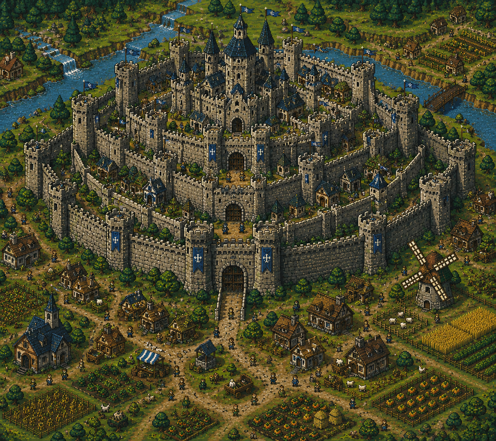
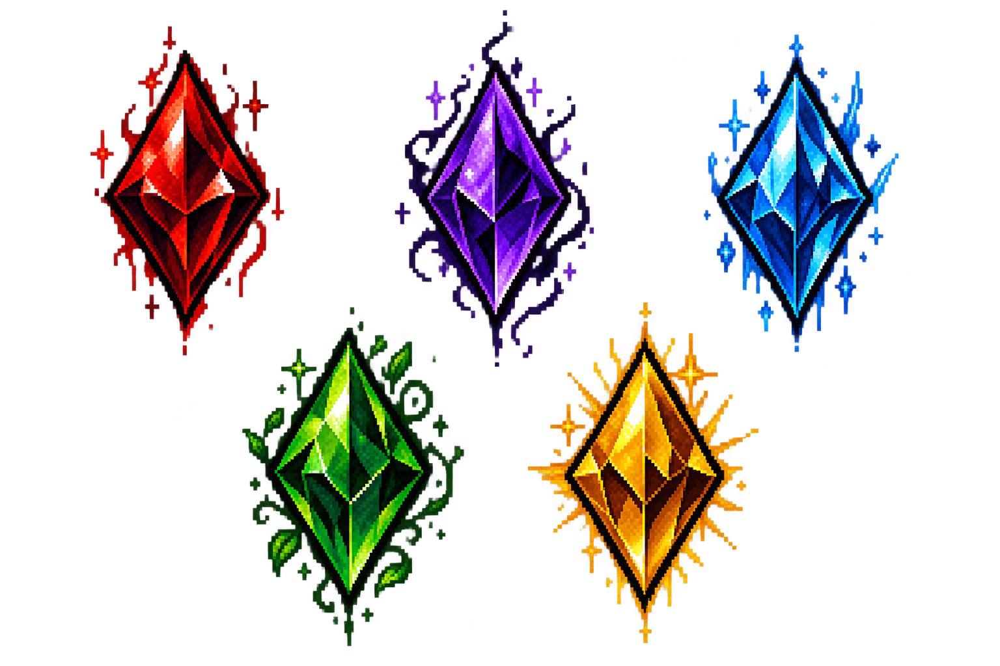

Bienvenido a la Wiki oficial de Beyond the Mist
Sobre el juego
El protagonista es una persona común que atraviesa una difícil situación económica.
En busca de dinero, consigue trabajo como personal de limpieza en un barco.
Durante el viaje, una violenta tormenta azota la embarcación y provoca un naufragio.
El protagonista cae al mar y, después de perder el conocimiento, despierta en una isla
desconocida.
La isla está completamente rodeada por una enorme niebla espesa que impide ver
qué existe más allá. Adentrandose en la isla, hay un reino donde sus habitantes
llevan generaciones viviendo aislados y creen que no existe nada fuera de ella.
La isla, además, está habitada por criaturas extrañas y fantásticas: seres mitológicos
desconocidos, bestias nunca vistas y enormes dragones que forman parte del ecosistema del
lugar.
Al llegar al reino, el protagonista descubre que la población vive en condiciones de
extrema pobreza, mientras que una pequeña élite cercana al Rey disfruta de grandes
riquezas y privilegios.
Sin dinero y sin una forma de regresar a casa, el protagonista encuentra una oportunidad
en el Gremio de Cazadores, una organización encargada de eliminar criaturas consideradas
peligrosas para los habitantes.
Así comienza su aventura.
Reino Aetheria
Aetheria es un reino medieval situado en una gran isla aislada del resto del mundo por
una misteriosa niebla. Su sociedad se encuentra fuertemente dividida entre una pequeña
élite vinculada a la Corona y una mayoría de trabajadores y campesinos que viven en
condiciones mucho más precarias.
El reino posee abundantes recursos naturales, incluyendo tierras fértiles, minas,
bosques y territorios habitados por criaturas fantásticas. Sin embargo, la mayor
parte de estos recursos se encuentra bajo el control de la Corona y de las
familias nobles que le son leales.

La capital está construida alrededor del castillo real y se encuentra dividida
según la posición económica de sus habitantes. Las zonas cercanas al castillo
están ocupadas por la nobleza y las familias más ricas, mientras que comerciantes,
artesanos y trabajadores viven en los sectores inferiores de la ciudad. Los
habitantes más pobres se concentran en los barrios exteriores y en pequeños
asentamientos fuera de las murallas.
La economía del reino depende principalmente de la agricultura, la minería,
el comercio, la pesca y la caza de criaturas. El Gremio de Cazadores se encarga
oficialmente de proteger a la población de las bestias peligrosas que habitan la isla.
Aunque Aethreia aparenta ser un reino próspero y estable, existen numerosos rumores
sobre personas desaparecidas, extraños experimentos y los verdaderos motivos por los
que la isla permanece completamente aislada por la niebla.
Gremio de Cazadores
El Gremio de Cazadores es una organización autorizada por la Corona para controlar y cazar
las criaturas que habitan las regiones salvajes de Aetheria. Su función principal es proteger
a la población y mantener seguras las rutas comerciales y los asentamientos.
La caza de criaturas está estrictamente regulada por la Corona. Los habitantes no pueden
cazar libremente ni comerciar con los cristales de Cristal Vital obtenidos de criaturas
sin autorización.
El gremio acepta solicitudes de particulares, comerciantes, agricultores y
autoridades. Los cazadores reciben contratos para eliminar criaturas peligrosas,
investigar ataques, proteger personas o recuperar objetos en zonas habitadas por bestias.
Para convertirse en cazador es necesario obtener un permiso oficial y ocupar una de las
vacantes disponibles dentro del Gremio. El número de cazadores autorizados es limitado y
las plazas se encuentran reguladas para evitar que exista una cantidad excesiva de
cristales en circulación.
Los aspirantes deben demostrar que poseen las capacidades necesarias para desempeñar la
actividad y, una vez aceptados, reciben una licencia que les permite cazar determinadas
criaturas y comerciar con los cristales obtenidos. Cazar sin permiso es considerado un
delito grave contra la Corona. Aquellos que sean descubiertos cazando ilegalmente
pueden ser sentenciados a muerte y sus bienes confiscados.
Cada contrato establece un objetivo y una recompensa. Una vez completado, el cazador
debe presentar pruebas de que la misión fue realizada para recibir su pago. Las
recompensas aumentan dependiendo de la dificultad y peligrosidad de cada encargo.
El gremio también mantiene registros de las criaturas conocidas de Aetheria. Estas
son clasificadas según su peligrosidad, comportamiento y cantidad de Cristal Vital
que poseen.
Aunque el gremio es considerado una organización respetada por la población, su
verdadera relación con la Corona es mucho más profunda de lo que la mayoría de sus
miembros conoce. Las criaturas cazadas son entregadas a la Corona, que aprovecha sus
restos y su Cristal Vital para sus propios fines.
Para la mayoría de los cazadores, sin embargo, se trata simplemente de un trabajo
bien remunerado que les permite ganarse la vida.
Rangos
Niveles de rango:
Hierro → Bronce → Plata → Oro → Diamante
Los cazadores de rango inferior realizan trabajos relativamente sencillos,
mientras que los rangos superiores reciben encargos relacionados con criaturas
extremadamente peligrosas.
Además, existen criaturas que no aparecen en los registros públicos del gremio. Son
consideradas amenazas excepcionales y sus contratos solamente son conocidos por
los cazadores de mayor rango y ciertos miembros de la Corona.
Cristal Vital

La Cristal Vital es la fuerza que permite a los seres vivos de Aetheria mantenerse con vida y
desarrollar sus capacidades. Se encuentra presente en todos los organismos y se manifiesta físicamente
mediante pequeños cristales en el interior de sus cuerpos.
La cantidad de Cristal Vital varía según la especie, edad y características del individuo. Las
criaturas más antiguas y poderosas poseen una mayor concentración, lo que les permite desarrollar
una mayor resistencia y capacidades extraordinarias.
La Cristal Vital solo posee sus propiedades mientras el organismo está vivo. Cuando una criatura muere,
esta energía desaparece y los cristales que quedan en su cuerpo pierden cualquier propiedad relacionada
con la vida o el poder.
A pesar de ello, los cristales conservan un valor económico muy elevado y son utilizados como moneda
de cambio en Aetheria. Su valor depende principalmente de su tamaño, pureza y de la criatura de la que
provienen.
Por esta razón, la caza de criaturas constituye una actividad importante dentro de la economía del reino.
Los cazadores pueden obtener cristales de Cristal Vital como recompensa o venderlos a comerciantes y
organizaciones especializadas.
Debido a su elevado valor, los cristales también son utilizados por la Corona como una de las
principales formas de riqueza y comercio.
Los Cristales Vitales obtenidos de estas criaturas poseen un valor excepcional debido a su tamaño
y concentración. La aparición de un Dragón Anciano puede provocar que el Gremio movilice a varios
cazadores de alto rango.
Debido a su extrema rareza, no existe una cantidad estable de Dragones Ancianos conocida en Aetheria.
Hábitat: Montañas, cavernas antiguas y regiones remotas.
Comportamiento: Territorial, inteligente y extremadamente peligroso.